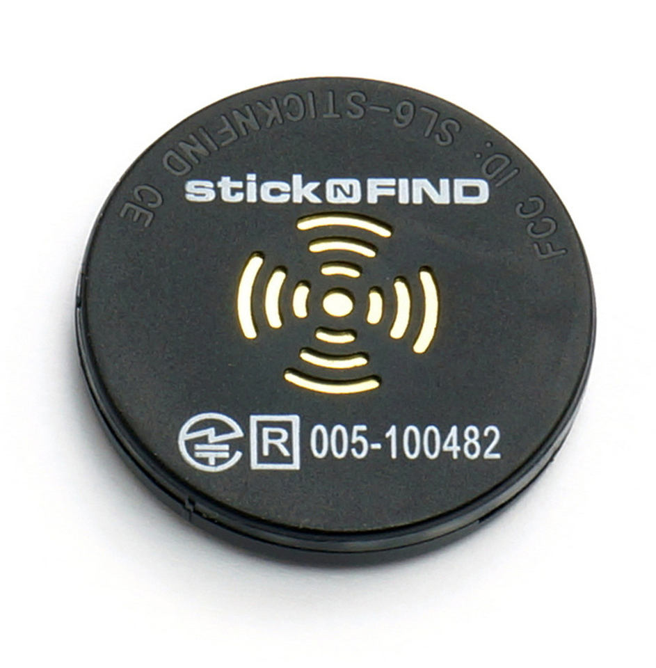

Scan BLE Devices
This app demonstrates how to scan Bluetooth Low Energy (BLE) devices and display the signal strength (rssi) of found devices. By tracking the signal strength you can scan for a BLE device and locate it.
You must run this app in the Evothings client app, or build a Cordova app with the plugin com.evothings.ble. Device with support for Bluetooth 4.0 and Android 4.3 or higher required. This app has been tested on Nexus 5 and Nexus 7 2013.

Source Code
You can browse the source code for this example at the Evothings GitHub repository
The file index.html is the main HTML file of the app.
In file js/app.js you will find the JavaScript code for the app. This code contains a fix for Nexus 7 that periodically restarts the scanning process. There is also an 'beforeunload' event implemented that stops BLE scanning before the page closes/reloads. This is needed to make reload in Evothings Workbench to work.
What You Need
This example requires an iOS device or Android device with support for Bluetooth 4.0 (which includes BLE). In addition Android 4.3 or later is required, in addition to the hardware.
You need to run the example in the Evothings client app. Alternatively, you can make a Cordova application if you wish to distribute the app. Then you need to include the Cordova plugin com.evothings.ble. See page Evothings App for further details.
Please note that BLE support on Android is still not fully mature. As a result, you may experience difficulties running this example.
The BLE Scan app has been tested with iOS 7 devices, Nexus 5 and Nexus 7 2013. It works to interactively reload the app from Evothings Workbench.
You also need at least one BLE device you can work with, for example the Texas Instruments SensorTag, or a Stick-N-Find Sticker, or the Pebble Tag (we have tested this app with all these three devices).
How To Get Up And Running
Follow these steps to get started with this example:
- Run the Evothings Workbench on your desktop/laptop computer.
- Run the Evothings client app on an Android mobile device and connect to the Workbench.
- Launch the example "BLE Scan" from the Workbench window.
- If you use the TI SensorTag, press the "activate" button on the tag.
- If everything works, the app should automatically detect BLE devices within range and display the signal strength for each device.
Copyright © 2013-2014 Evothings AB